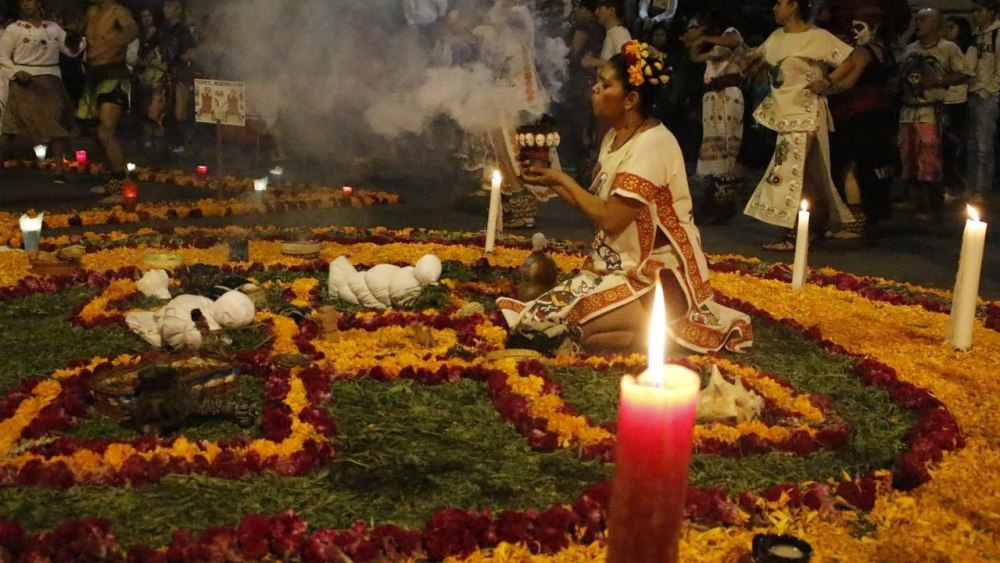
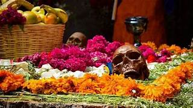
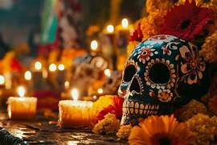
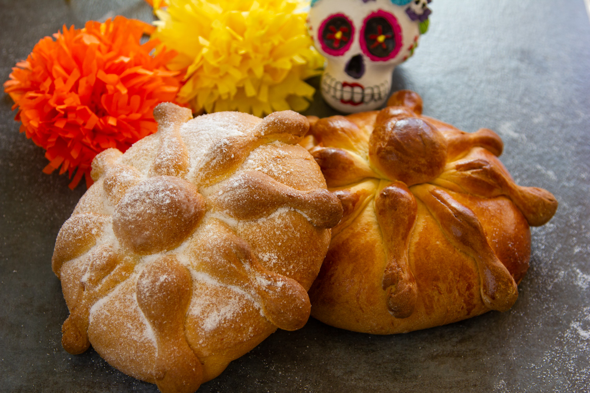
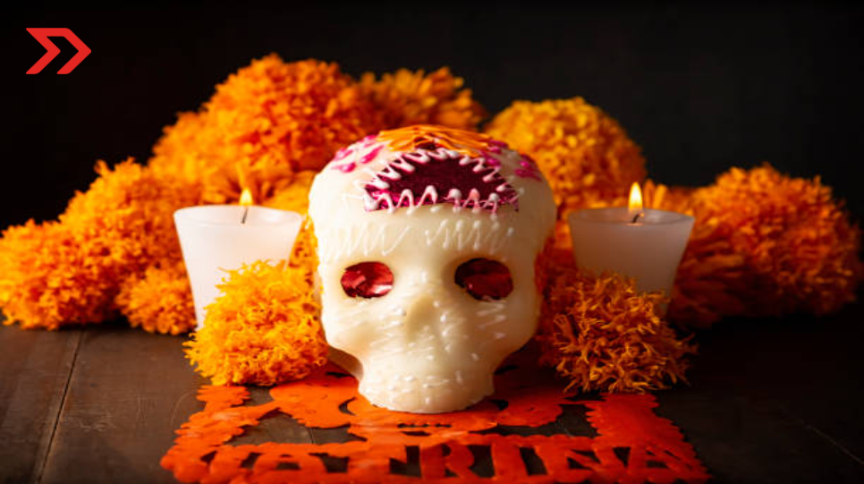
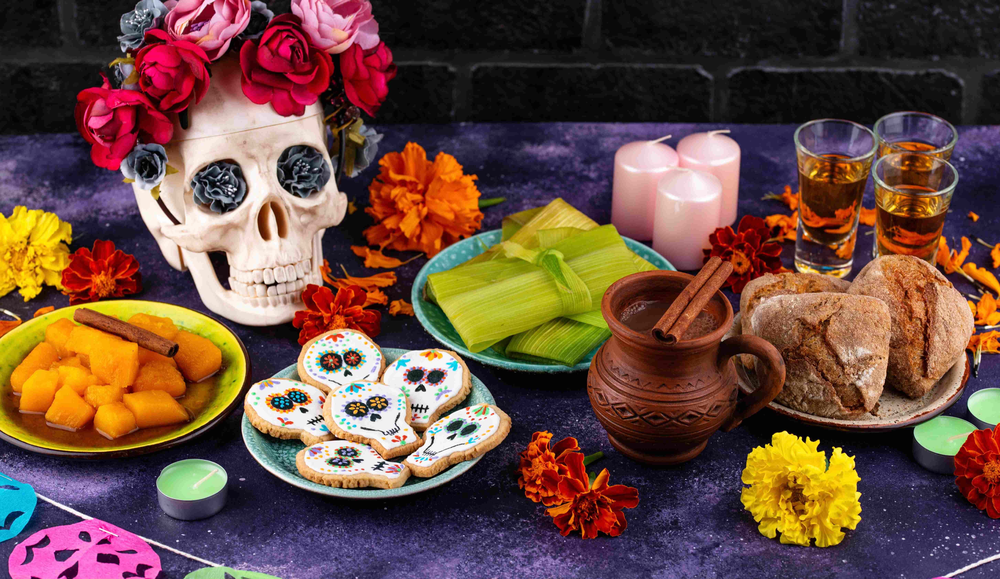

El Día de los Muertos en México tiene su origen en las antiguas civilizaciones
prehispánicas, como los
mexicas, mayas y purépe chas, quienes creían que la muerte era una etapa más del ciclo de la vida. Con
la llegada de los españoles, estas tradiciones se mezclaron con el catolicismo, especialmente con el Día
de Todos los Santos y el Día de los Fieles Difuntos, dando origen a una celebración única que honra a
los muertos mediante ofrendas, rituales y símbolos que celebran la memoria y el recuerdo de los seres

TEOTIHUACAN
El pueblo teotihuacano acostumbraba a hacer ofrenda en honor a los fallecidos casi todo el
tiempo, practicando cansados pero intensos rituales con el propósito de que el difunto llegase
con bien a uno de los cuatro paraísos según su forma de muerte

MAYA
En la cosmovisión de la cultura maya, se tenía la creencia de la existencia de un inframundo
llamado Xibalbá, un reino complejo y multidimensional que esperaba a las almas de los
fallecidos

NAHUA
En la cultura nahua del Anáhuac, no existía un «Día de Muertos» como tal, sino que se honraba a
los
difuntos en tres fechas diferentes del calendario nahua, conocidas como veintenas, dedicadas a
Mictlantecuhtli y Mictlancíhuatl.
Siguiente sección
comida
La comida es un elemento esencial dentro de la celebración del Día de los Muertos, ya que representa una
forma de compartir y recordar a los seres queridos fallecidos.
Se preparan platos tradicionales y alimentos significativos que eran del agrado de los difuntos, los cuales
se colocan en las ofrendas como símbolo de respeto, cariño y conexión.
Esta práctica resalta la importancia de la gastronomía como parte de la identidad cultural y del homenaje a
la memoria.

PAN DE MUERTO
El pan de muerto es uno de los alimentos más representativos de esta celebración.
Su forma y decoración tienen un significado simbólico relacionado con la vida y la muerte.
Se elabora especialmente durante esta época y se comparte como una forma de honrar y recordar a los
difuntos.

CALAVERAS DE AZUCAR
Las calaveras de azúcar son dulces tradicionales que representan de manera simbólica a las personas
fallecidas.
Suelen decorarse con colores llamativos y nombres, formando parte de las ofrendas.
Además de su valor cultural, también reflejan la forma en que esta tradición aborda la muerte de
manera significativa.

Comida tradicional
Durante el Día de los Muertos se preparan diferentes platillos tradicionales que tienen un
significado especial.
Estos alimentos suelen ser los favoritos de los difuntos y se colocan en las ofrendas como un gesto
de cariño.
La comida representa la unión entre la familia, la memoria y la cultura.
Volver arriba